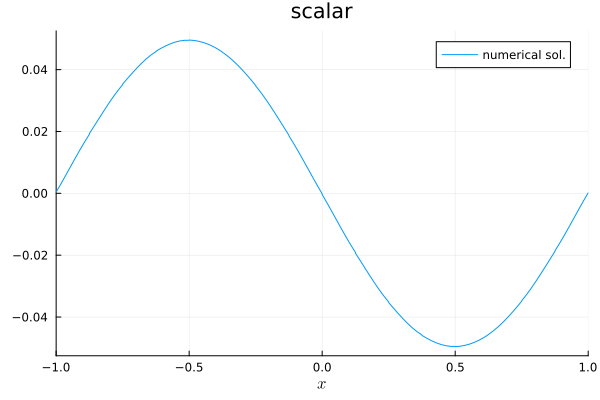
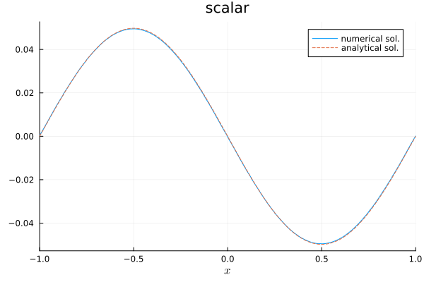
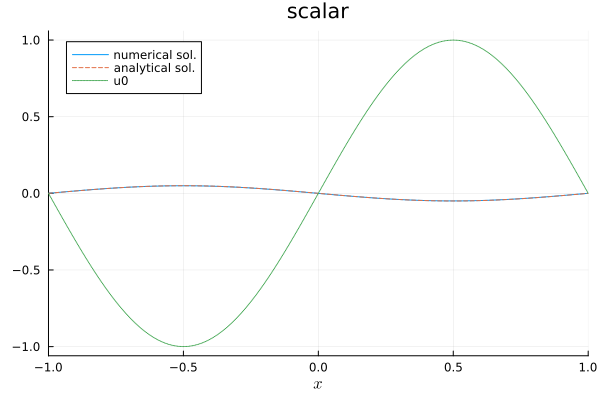

22: Custom semidiscretizations


As described in the overview section, semidiscretizations are high-level descriptions of spatial discretizations in Trixi.jl. Trixi.jl's main focus is on hyperbolic conservation laws represented in a SemidiscretizationHyperbolic. Hyperbolic-parabolic problems based on the advection-diffusion equation or the compressible Navier-Stokes equations can be represented in a SemidiscretizationHyperbolicParabolic. This is described in the basic tutorial on parabolic terms and its extension to custom parabolic terms. In this tutorial, we will describe how these semidiscretizations work and how they can be used to create custom semidiscretizations involving also other tasks.
Overview of the right-hand side evaluation
The semidiscretizations provided by Trixi.jl are set up to create ODEProblems from the SciML ecosystem for ordinary differential equations. In particular, a spatial semidiscretization can be wrapped in an ODE problem using semidiscretize, which returns an ODEProblem. This ODEProblem bundles an initial condition, a right-hand side (RHS) function, the time span, and possible parameters. The ODEProblems created by Trixi.jl use the semidiscretization passed to semidiscretize as a parameter. For a SemidiscretizationHyperbolic, the ODEProblem uses Trixi.rhs_hyperbolic! as its ODE RHS. For a SemidiscretizationHyperbolicParabolic, Trixi.jl uses a SplitODEProblem with Trixi.rhs_parabolic! for the potentially stiff parabolic part and Trixi.rhs_hyperbolic! for the hyperbolic part.
Standard Trixi.jl setup
In this tutorial, we will consider the linear advection equation with source term
\[\partial_t u(t,x) + \partial_x u(t,x) = -\exp(-t) \sin\bigl(\pi (x - t) \bigr)\]
with periodic boundary conditions in the domain [-1, 1] as a model problem. The initial condition is
\[u(0,x) = \sin(\pi x).\]
The source term results in some damping and the analytical solution
\[u(t,x) = \exp(-t) \sin\bigl(\pi (x - t) \bigr).\]
First, we discretize this equation using the standard functionality of Trixi.jl.
using OrdinaryDiffEqLowStorageRKusing Trixi, PlotsThe linear scalar advection equation is already implemented in Trixi.jl as LinearScalarAdvectionEquation1D. We construct it with an advection velocity 1.0.
equations = LinearScalarAdvectionEquation1D(1.0)┌──────────────────────────────────────────────────────────────────────────────────────────────────┐
│ LinearScalarAdvectionEquation1D │
│ ═══════════════════════════════ │
│ #variables: ……………………………………………………………… 1 │
│ │ variable 1: ………………………………………………………… scalar │
└──────────────────────────────────────────────────────────────────────────────────────────────────┘Next, we use a standard DGSEM solver.
solver = DGSEM(polydeg = 3)┌──────────────────────────────────────────────────────────────────────────────────────────────────┐
│ DG{Float64} │
│ ═══════════ │
│ basis: …………………………………………………………………………… LobattoLegendreBasis{Float64}(polydeg=3) │
│ mortar: ………………………………………………………………………… LobattoLegendreMortarL2{Float64}(polydeg=3) │
│ surface integral: ……………………………………………… SurfaceIntegralWeakForm │
│ │ surface flux: …………………………………………………… flux_central │
│ volume integral: ………………………………………………… VolumeIntegralWeakForm │
└──────────────────────────────────────────────────────────────────────────────────────────────────┘We create a simple TreeMesh in 1D.
coordinates_min = (-1.0,)coordinates_max = (+1.0,)mesh = TreeMesh(coordinates_min, coordinates_max; initial_refinement_level = 4, periodicity = true)┌──────────────────────────────────────────────────────────────────────────────────────────────────┐
│ TreeMesh{1, Trixi.SerialTree{1, Float64}} │
│ ═════════════════════════════════════════ │
│ center: ………………………………………………………………………… [0.0] │
│ length: ………………………………………………………………………… 2.0 │
│ periodicity: …………………………………………………………… (true,) │
│ current #cells: …………………………………………………… 31 │
│ #leaf-cells: …………………………………………………………… 16 │
│ current capacity: ……………………………………………… 31 │
└──────────────────────────────────────────────────────────────────────────────────────────────────┘We wrap everything in in a semidiscretization and pass the source terms as a standard Julia function. Please note that Trixi.jl uses SVectors from StaticArrays.jl to store the conserved variables u. Thus, the return value of the source terms must be wrapped in an SVector - even if we consider just a scalar problem.
function initial_condition(x, t, equations) return SVector(exp(-t) * sinpi(x[1] - t))endfunction source_terms_standard(u, x, t, equations) return -initial_condition(x, t, equations)endsemi = SemidiscretizationHyperbolic(mesh, equations, initial_condition, solver; boundary_conditions = boundary_condition_periodic, source_terms = source_terms_standard)┌──────────────────────────────────────────────────────────────────────────────────────────────────┐
│ SemidiscretizationHyperbolic │
│ ════════════════════════════ │
│ #spatial dimensions: ……………………………………… 1 │
│ mesh: ……………………………………………………………………………… TreeMesh{1, Trixi.SerialTree{1, Float64}} with length 31 │
│ equations: ………………………………………………………………… LinearScalarAdvectionEquation1D │
│ initial condition: …………………………………………… initial_condition │
│ boundary conditions: ……………………………………… Trixi.BoundaryConditionPeriodic │
│ source terms: ………………………………………………………… source_terms_standard │
│ solver: ………………………………………………………………………… DG │
│ total #DOFs per field: ………………………………… 64 │
└──────────────────────────────────────────────────────────────────────────────────────────────────┘Now, we can create the ODEProblem, solve the resulting ODE using a time integration method from OrdinaryDiffEq.jl, and visualize the numerical solution at the final time using Plots.jl.
tspan = (0.0, 3.0)ode = semidiscretize(semi, tspan)sol = solve(ode, RDPK3SpFSAL49(); ode_default_options()...)plot(sol; label = "numerical sol.", legend = :topright)
We can also plot the analytical solution for comparison. Since Trixi.jl uses SVectors for the variables, we take their first (and only) component to get the scalar value for manual plotting.
let x = range(-1.0, 1.0; length = 200) plot!(x, first.(initial_condition.(x, sol.t[end], equations)), label = "analytical sol.", linestyle = :dash, legend = :topright)end
We can also add the initial condition to the plot.
plot!(sol.u[1], semi, label = "u0", linestyle = :dot, legend = :topleft)
You can of course also use some callbacks provided by Trixi.jl as usual.
summary_callback = SummaryCallback()analysis_interval = 100analysis_callback = AnalysisCallback(semi; interval = analysis_interval)alive_callback = AliveCallback(; analysis_interval)callbacks = CallbackSet(summary_callback, analysis_callback, alive_callback)sol = solve(ode, RDPK3SpFSAL49(); ode_default_options()..., callback = callbacks)retcode: Success
Interpolation: 1st order linear
t: 2-element Vector{Float64}:
0.0
3.0
u: 2-element Vector{Vector{Float64}}:
[-3.487868498008632e-16, -0.1083263689449018, -0.2803509724255764, -0.38268343236508945, -0.3826834323650901, -0.48051200262449845, -0.6263474196321541, -0.7071067811865472, -0.7071067811865478, -0.7795440397566659 … 0.7795440397566659, 0.7071067811865478, 0.7071067811865472, 0.6263474196321541, 0.48051200262449845, 0.3826834323650901, 0.38268343236508945, 0.2803509724255764, 0.1083263689449018, 3.487868498008632e-16]
[8.578155767848352e-5, 0.005375930937100428, 0.013994780063106048, 0.01896037097012542, 0.019284049794098857, 0.02386807899325976, 0.031246938185847065, 0.03519914629577806, 0.035262001301849345, 0.03876142816891147 … -0.03881470916268938, -0.03522623280039464, -0.03503120519973889, -0.031231890126130302, -0.023866112047284286, -0.019060755943840716, -0.019032944484387367, -0.014009792356319268, -0.005315982491159218, -0.00021304862339566928]Using a custom ODE right-hand side function
Next, we will solve the same problem but use our own ODE RHS function. To demonstrate this, we will artificially create a global variable containing the current time of the simulation.
const GLOBAL_TIME = Ref(0.0)function source_terms_custom(u, x, t, equations) t = GLOBAL_TIME[] return -initial_condition(x, t, equations)endsource_terms_custom (generic function with 1 method)Next, we create our own RHS function to update the global time of the simulation before calling the RHS function from Trixi.jl.
function rhs_source_custom!(du_ode, u_ode, semi, t) GLOBAL_TIME[] = t return Trixi.rhs_hyperbolic!(du_ode, u_ode, semi, t)endrhs_source_custom! (generic function with 1 method)Next, we create an ODEProblem manually copying over the data from the one we got from semidiscretize earlier.
ode_source_custom = ODEProblem(rhs_source_custom!, ode.u0, ode.tspan, ode.p) # semisol_source_custom = solve(ode_source_custom, RDPK3SpFSAL49(); ode_default_options()...)plot(sol_source_custom; label = "numerical sol.")let x = range(-1.0, 1.0; length = 200) plot!(x, first.(initial_condition.(x, sol_source_custom.t[end], equations)), label = "analytical sol.", linestyle = :dash, legend = :topleft)endplot!(sol_source_custom.u[1], semi, label = "u0", linestyle = :dot, legend = :topleft)This also works with callbacks as usual.
summary_callback = SummaryCallback()analysis_interval = 100analysis_callback = AnalysisCallback(semi; interval = analysis_interval)alive_callback = AliveCallback(; analysis_interval)callbacks = CallbackSet(summary_callback, analysis_callback, alive_callback)sol = solve(ode_source_custom, RDPK3SpFSAL49(); ode_default_options()..., callback = callbacks)retcode: Success
Interpolation: 1st order linear
t: 2-element Vector{Float64}:
0.0
3.0
u: 2-element Vector{Vector{Float64}}:
[-3.487868498008632e-16, -0.1083263689449018, -0.2803509724255764, -0.38268343236508945, -0.3826834323650901, -0.48051200262449845, -0.6263474196321541, -0.7071067811865472, -0.7071067811865478, -0.7795440397566659 … 0.7795440397566659, 0.7071067811865478, 0.7071067811865472, 0.6263474196321541, 0.48051200262449845, 0.3826834323650901, 0.38268343236508945, 0.2803509724255764, 0.1083263689449018, 3.487868498008632e-16]
[8.578155767848352e-5, 0.005375930937100428, 0.013994780063106048, 0.01896037097012542, 0.019284049794098857, 0.02386807899325976, 0.031246938185847065, 0.03519914629577806, 0.035262001301849345, 0.03876142816891147 … -0.03881470916268938, -0.03522623280039464, -0.03503120519973889, -0.031231890126130302, -0.023866112047284286, -0.019060755943840716, -0.019032944484387367, -0.014009792356319268, -0.005315982491159218, -0.00021304862339566928]Setting up a custom semidiscretization
Using a global constant is of course not really nice from a software engineering point of view. Thus, it can often be useful to collect additional data in the parameters of the ODEProblem. Thus, it is time to create our own semidiscretization. Here, we create a small wrapper of a standard semidiscretization of Trixi.jl and the current global time of the simulation.
struct CustomSemidiscretization{Semi, T} <: Trixi.AbstractSemidiscretization semi::Semi t::Tendsemi_custom = CustomSemidiscretization(semi, Ref(0.0))Main.CustomSemidiscretization{SemidiscretizationHyperbolic{TreeMesh{1, Trixi.SerialTree{1, Float64}, Float64}, LinearScalarAdvectionEquation1D{Float64}, typeof(Main.initial_condition), Trixi.BoundaryConditionPeriodic, typeof(Main.source_terms_standard), DGSEM{LobattoLegendreBasis{Float64, 4, SVector{4, Float64}, Matrix{Float64}, Matrix{Float64}}, Trixi.LobattoLegendreMortarL2{Float64, 4, Matrix{Float64}, Matrix{Float64}}, SurfaceIntegralWeakForm{typeof(flux_central)}, VolumeIntegralWeakForm}, @NamedTuple{elements::Trixi.TreeElementContainer1D{Float64, Float64}, interfaces::Trixi.TreeInterfaceContainer1D{Float64}, boundaries::Trixi.TreeBoundaryContainer1D{Float64, Float64}}}, Base.RefValue{Float64}}(SemidiscretizationHyperbolic(TreeMesh{1, Trixi.SerialTree{1, Float64}} with length 31, LinearScalarAdvectionEquation1D with one variable, initial_condition, boundary_condition_periodic, source_terms_standard, DG{Float64}(LobattoLegendreBasis{Float64}(polydeg=3), LobattoLegendreMortarL2{Float64}(polydeg=3), SurfaceIntegralWeakForm{typeof(flux_central)}(Trixi.flux_central), VolumeIntegralWeakForm()), cache(elements interfaces boundaries)), Base.RefValue{Float64}(0.0))To get pretty printing in the REPL, you can consider specializing
Base.show(io::IO, parameters::CustomSemidiscretization)Base.show(io::IO, ::MIME"text/plain", parameters::CustomSemidiscretization)
for your custom semidiscretiation.
Next, we create our own source terms that use the global time stored in the custom semidiscretiation.
source_terms_custom_semi = let semi_custom = semi_custom function source_terms_custom_semi(u, x, t, equations) t = semi_custom.t[] return -initial_condition(x, t, equations) endendsource_terms_custom_semi (generic function with 1 method)We also create a custom ODE RHS to update the current global time stored in the custom semidiscretization. We unpack the standard semidiscretization created by Trixi.jl and pass it to Trixi.rhs_hyperbolic!.
function rhs_semi_custom!(du_ode, u_ode, semi_custom, t) semi_custom.t[] = t return Trixi.rhs_hyperbolic!(du_ode, u_ode, semi_custom.semi, t)endrhs_semi_custom! (generic function with 1 method)Finally, we set up an ODEProblem and solve it numerically.
ode_semi_custom = ODEProblem(rhs_semi_custom!, ode.u0, ode.tspan, semi_custom)sol_semi_custom = solve(ode_semi_custom, RDPK3SpFSAL49(); ode_default_options()...)retcode: Success
Interpolation: 1st order linear
t: 2-element Vector{Float64}:
0.0
3.0
u: 2-element Vector{Vector{Float64}}:
[-3.487868498008632e-16, -0.1083263689449018, -0.2803509724255764, -0.38268343236508945, -0.3826834323650901, -0.48051200262449845, -0.6263474196321541, -0.7071067811865472, -0.7071067811865478, -0.7795440397566659 … 0.7795440397566659, 0.7071067811865478, 0.7071067811865472, 0.6263474196321541, 0.48051200262449845, 0.3826834323650901, 0.38268343236508945, 0.2803509724255764, 0.1083263689449018, 3.487868498008632e-16]
[0.00039566016129114303, 0.005595530597144552, 0.01420823700056966, 0.019099085166061614, 0.01933615033096657, 0.02399145283812463, 0.03128767555719924, 0.03512318003345417, 0.035313794068257194, 0.0387373345584359 … -0.038403718625379946, -0.034873676580076514, -0.034746550097046656, -0.030828914911087947, -0.02350468228582584, -0.018776524261631816, -0.01859887840964364, -0.013657386582008402, -0.0050293813323077285, 0.00016360783023488103]If we want to make use of additional functionality provided by Trixi.jl, e.g., for plotting, we need to implement a few additional specializations. In this case, we forward everything to the standard semidiscretization provided by Trixi.jl wrapped in our custom semidiscretization.
Base.ndims(semi::CustomSemidiscretization) = ndims(semi.semi)function Trixi.mesh_equations_solver_cache(semi::CustomSemidiscretization) return Trixi.mesh_equations_solver_cache(semi.semi)endNow, we can plot the numerical solution as usual.
plot(sol_semi_custom; label = "numerical sol.")let x = range(-1.0, 1.0; length = 200) plot!(x, first.(initial_condition.(x, sol_semi_custom.t[end], equations)), label = "analytical sol.", linestyle = :dash, legend = :topleft)endplot!(sol_semi_custom.u[1], semi, label = "u0", linestyle = :dot, legend = :topleft)This also works with many callbacks as usual. However, the AnalysisCallback requires some special handling since it makes use of a performance counter contained in the standard semidiscretizations of Trixi.jl to report some performance metrics. Here, we forward all accesses to the performance counter to the wrapped semidiscretization.
function Base.getproperty(semi::CustomSemidiscretization, s::Symbol) if s === :performance_counter wrapped_semi = getfield(semi, :semi) wrapped_semi.performance_counter else getfield(semi, s) endendMoreover, the AnalysisCallback also performs some error calculations. We also need to forward them to the wrapped semidiscretization.
function Trixi.calc_error_norms(func, u, t, analyzer, semi::CustomSemidiscretization, cache_analysis) return Trixi.calc_error_norms(func, u, t, analyzer, semi.semi, cache_analysis)endNow, we can work with the callbacks used before as usual.
summary_callback = SummaryCallback()analysis_interval = 100analysis_callback = AnalysisCallback(semi_custom; interval = analysis_interval)alive_callback = AliveCallback(; analysis_interval)callbacks = CallbackSet(summary_callback, analysis_callback, alive_callback)sol = solve(ode_semi_custom, RDPK3SpFSAL49(); ode_default_options()..., callback = callbacks)retcode: Success
Interpolation: 1st order linear
t: 2-element Vector{Float64}:
0.0
3.0
u: 2-element Vector{Vector{Float64}}:
[-3.487868498008632e-16, -0.1083263689449018, -0.2803509724255764, -0.38268343236508945, -0.3826834323650901, -0.48051200262449845, -0.6263474196321541, -0.7071067811865472, -0.7071067811865478, -0.7795440397566659 … 0.7795440397566659, 0.7071067811865478, 0.7071067811865472, 0.6263474196321541, 0.48051200262449845, 0.3826834323650901, 0.38268343236508945, 0.2803509724255764, 0.1083263689449018, 3.487868498008632e-16]
[8.578155767848352e-5, 0.005375930937100428, 0.013994780063106048, 0.01896037097012542, 0.019284049794098857, 0.02386807899325976, 0.031246938185847065, 0.03519914629577806, 0.035262001301849345, 0.03876142816891147 … -0.03881470916268938, -0.03522623280039464, -0.03503120519973889, -0.031231890126130302, -0.023866112047284286, -0.019060755943840716, -0.019032944484387367, -0.014009792356319268, -0.005315982491159218, -0.00021304862339566928]For even more advanced usage of custom semidiscretizations, you may look at the source code of the ones contained in Trixi.jl, e.g.,
SemidiscretizationHyperbolicParabolicSemidiscretizationEulerGravitySemidiscretizationEulerAcousticsSemidiscretizationCoupled
Package versions
These results were obtained using the following versions.
using InteractiveUtilsversioninfo()using PkgPkg.status(["Trixi", "OrdinaryDiffEqLowStorageRK", "Plots"], mode = PKGMODE_MANIFEST)Julia Version 1.10.12
Commit d93beab124c (2026-08-15 10:29 UTC)
Build Info:
Official https://julialang.org/ release
Platform Info:
OS: Linux (x86_64-linux-gnu)
CPU: 4 × INTEL(R) XEON(R) PLATINUM 8573C
WORD_SIZE: 64
LIBM: libopenlibm
LLVM: libLLVM-15.0.7 (ORCJIT, icelake-client)
Threads: 1 default, 0 interactive, 1 GC (on 4 virtual cores)
Environment:
JULIA_PKG_SERVER_REGISTRY_PREFERENCE = eager
Status `~/work/Trixi.jl/Trixi.jl/docs/Manifest.toml`
[b0944070] OrdinaryDiffEqLowStorageRK v3.4.0
[91a5bcdd] Plots v1.41.7
[a7f1ee26] Trixi v0.17.7-DEV `~/work/Trixi.jl/Trixi.jl`This page was generated using Literate.jl.